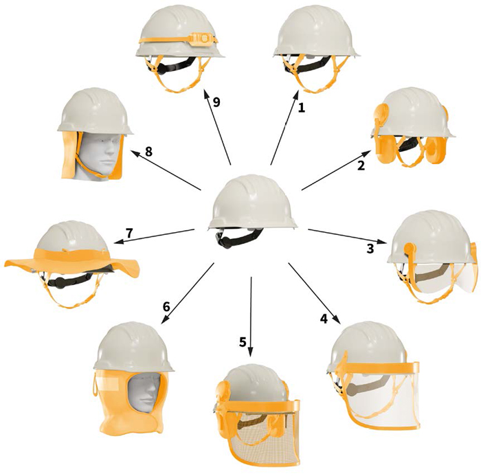
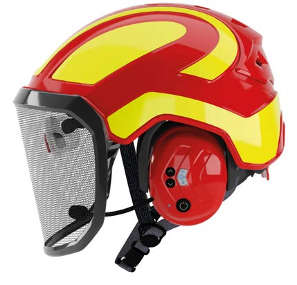

Abb. 14 Industrieschutzhelme mit:
1: Kinnriemen; 2: Kinnriemen und Kapselgehörschützer; 3: Kinnriemen und Brille; 4: Kinnriemen und Visier;
5: Kinnriemen, Kapselgehörschützer und Visier; 6: Unterziehhaube; 7: Kinnriemen und UV-Schutz (Krempe);
8: Kinnriemen und Nackentuch bzw. UV-Schutz-Nackentuch; 9: Kinnriemen und Lampe
Zubehör im Sinne dieser DGUV Regel sind Elemente, die zur Erhaltung der Funktion ausgetauscht bzw. zur Erweiterung von zusätzlichen Schutzfunktionen oder sonstigen Funktionen (Beleuchtung etc.) am Helm angebracht werden können.
Die Schutzwirkung des Kopfschutzes darf durch die Verwendung von Zubehör nicht beeinträchtigt werden. Daher müssen der Kopfschutz und das Zubehör aufeinander abgestimmt sein.
Beispiele von Zubehör:
Die Hersteller sind im Rahmen der PSA-Verordnung verpflichtet, in ihren Anleitungen gegebenenfalls Angaben über mögliches Zubehör zu machen, das mit dem Kopfschutz verwendet werden darf. Sie sind dafür verantwortlich, dass Zubehör keine negativen Einflüsse auf die Schutzwirkung des Kopfschutzes hat. Daher schließen die Hersteller in aller Regel das Anbringen von Zubehör, das nicht von ihnen freigegeben wurde, aus. In diesem Zusammenhang verweisen sie darauf, dass ihre Gewährleistung durch das Anbringen von nicht zugelassenem Zubehör erlischt. Soll dennoch Zubehör anderer Hersteller am Kopfschutz angebracht werden, muss eine Abklärung mit dem Hersteller des Kopfschutzes erfolgen.
Beim Einsatz von einer oder mehreren Persönlichen Schutzausrüstungen, die zusätzlich am Kopf oder am Kopfschutz angebracht werden sollen, beispielsweise in Form von Gehörschutz, Augen- bzw. Gesichtsschutz, Atemschutz oder Kombinationen der genannten PSA, darf die Schutzwirkung der einzelnen Schutzausrüstungen nicht beeinträchtigt werden.
Kapselgehörschützer, die an einem bestimmten Helmmodell befestigt werden sollen, müssen die Norm für Gehörschützer, Teil 3 (DIN EN 352) erfüllen, die eine Reihe von physikalischen und akustischen Anforderungen festlegt. Der Hersteller der Kapselgehörschützer muss alle Helmmodelle, die für den Einsatz mit den Kapselgehörschützern geprüft sind, in seiner Anleitung (in der sog. "Trägervorrichtungsliste") aufführen.

Abb. 15 Kombination von PSA: Kopfschutz, Gehörschutz, Augen- und Gesichtsschutz